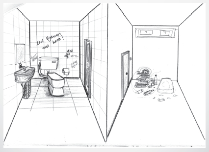

Mekan:Ata Stüdyoları İç - Gece
1.Sahne: Tolga Örnek: Burhan bu dekorlara gerçeklik tadı vereceksin diiii mi?
Burhan Türk: Evet hocam sabahlıcaz.
Beş dakika sonra
2.Sahne: Tolga Örnek: Burhan bu dekorları gerçek gibi eskite bileceğiz diii mi?
Burhan Türk: Evet hocam sabahlıcaz.
............................
............................
............................
180.Sahne: Tolga Örnek: Burhan bu dekorlar gerçek gibi eski görünecek diiii mi?
Burhan Türk: Evet hocam sabahlıcaz.
Mekan: Ata stüdyoları İç - Gün
Ertesi Gün
181. Sahne: Tolga Örnek: Burhan burası gerçekten gerçek olmuş.
Burhan Türk: Evet Hocam sabahladık.
O gün bu cümleler son kez kurulmuştu ve artık hiçbir şey eskisi gibi olmayacaktı, olmadı. Burhan, Tolga Örnek’ten aynı cümleyi tekrar duymayı bekledi, sabırla ama duymadı.
İyi geceler sayın dilenleyen diyerek başladık. Birbirine uyumlu bir ekip ve keyifli bir oyuncu kadrosuyla en berbat günler de bile (sanat ekibi açısından)eylenerek çalıştık. Kaybedenler kulübunun kazanan üyeleri olduk. Bir gün kaybedenler kulübu bitti, bu gece ve her gece dendiğinde tekrar kaybeden olduk. Hiçbir zaman sorun çıkartmadan arkamda durup işini en iyi şekilde yapan ve beni gururlandıran sanat ekibime teşekkür ediyorum. Tolga Örnek’i tanımama vesile olan İsmail Çağlar’a, kurduğumuz her mekanı sanki filmin tek mekanıymışcasına özen gösterip sergileyen Burak Kanbir’e,filmi teknik ekibiymiş gibi benimseyen oyunculara, işin özeti filme katkısı olan herkesi tedirginlikle kutluyorum. Ve geminin kaptanı, ego, tatminsizlik vs. gibi sektörel hastalılarımızdan arındırılmış ilginç bir şahsiyet.Biz seni tanımaktan ve seninle çalışmaktan müthiş keyif aldık Tolga Örnek.
Keşke bitmeseydi be.....
Bizim ülkemizde film çekmek her zaman sancılı olmuştur. Kaybedenler Kulübü de tabiki zor şartlarda başladı. Başlayamaması gerekse de başladı. Çünkü; Filmciler denilen ırk başlangıçlarda hayt huyt hooop yallah demeyi ve adım atmayı becerebildiğinde devamını şartlar ne olursa olsun getiren ve çözen, durmayan, her sabah toplanıp hallederiz marka yakıtla depolarını doldurup yola çıkan günde iki kez sadece yapılamayacak iş yoktur istasyonunda dinlenip yolunu bitirmeyi başarabilen, diğer kabilelerin aksine türünü her geçen gün artıran üretken bir kabiledir.
Ben her yaptığımız proje için bunları keyifle yaptığımı söylemem. Söylenemez de. Zira bedenin sınırlarını zorlamak keyif alma hissiyatını gebertir. Ama Kaybedenler Kulübü aile şirketimizin bir ürünü gibiydi. Kimse bu işi evet dedik aldık artık yapıcaz diye bir zorunlulukla yapmadı. Sabah ilk çay nasıl hissettirir size? Demlenene kadar beklemenin heyecanı ve çay doldurulur sıfatlar sırıtır ilk yudum sigara yaktıracak kadar keyif salar. Tamda bundan bahsediyorum işte.24 saat çay içince benzetmelerimizde çayla sınırlı kaldı kusura bakmayın.
TAMAM TAMAM YETER BUKADAR BAL KAYMAK SÖZLER. HERNEKADAR DOĞRU OLSADA
--İsmail abi 60’ı bulacak galiba
--Yapma ya napcaz.
-- Buldurmicaz
--Süper olur
Tabiki İsmail abi de ister daha fazla harcamayı ama nerde.Film denen şey batmayı ve kendisi derinlere yol alırken başkasınıda yanına almayı çok sever. Çünkü tek başına hiçbişeydir.
--60 – 1= 59 bile başarıdır. Sizce süpermidir? Bizce öyle. İzlediğiniz filmlerin nekadar ince hesaplarla hazırlayıp size sunduğumuzu özetlemiştir. Muhasebeci gibi mi oldum? Daha neler oldum neler bu neki. Sanat yönetmeni herşeyi bilmeliymiş öğrettiler. Ya anam oğlun ne iş yapıyo diye sorulduğunda sağda solda takılıyo yapıyo bişiler diye özetleyebiliyo düşünün artık. Kadıncaz bi tanım bulamadı.
Neyse biraz başlangıç aşamasından bahsetmeyi istiyorum.Bu filmdeki karakterleri ortaya çıkarmak zor oldu açıkçası.Üfürdüğümüz tipler olsaydı çok rahat olurduk tabi ama burda bu filmde bana anlatılan karakterleri çok iyi anlamam onlarla aynı şeyi düşünmem ve içinde bulunduğu ortamı ortaya çıkartmam gerekti. Çok kişiden yardım aldık. Mekan aksesuar ve giyimlerini doğru verebilmek için Kaan, Mete ve Şenol un beynini yedik. Şenol ve tayfasının yeni yapılan bir tuvaleti 2 saatte nasıl bir harabeye dönüştürdüklerine şahit olduk. Ya herşeyi attım bir kenara da taşıdığımız kamyon kamyon kitabı unutamıyorum. Teessüf ederim 6:45 yayınları 2 ay sırttan tedavi gördüm okadar kitap verdiniz 2 de adam yollasaydınızya. Şakası bir yana yardımlarınız için çok sağolun gerçekten.
Dekorda uyumak: Stüdyoda hazırlamakla yükümlü olduğumuz mekanlar bittiğinde bir huşu sardı bizi. Eve gitmek istemiyordum. Gittiğimde de banyo yapıp gece yarısında olsa geri dönüp plato da uyuyordum. Kullandığımız koltuk ve yatakların rahatlığını sadece oyuncuların yaşamasına gönlüm razı olmadı bencilliğimin esiri oldum.
Sanat ekibi hazırlıkta kendi aralarında konuşurlar:
Yeliz: Burhan sen daha önce stencil yaptın mı ?
Burhan: Evet askerde logar kapaklarına numara basmıştım.

Yeliz: Ya git ondan nolcak bu işte çok lazım.
Burhan: Benim bulunduğum yer Tugaydı ne kadar logar kapağı var biliyor musun sen.
Filmde beni sevindiren küçük ama çok etkili olaylardan biri de aurora marka viski yapmaktı. Aurora yı o yaban ellere gidip çıplak gözle görebilmek için yeterli para balyam olmaması yüzünden hep içimde kalmıştı bu sayede sanırım geçici bir sakinleştirici almış oldum.
Maddelerin ani şekil değişikliği:
-Gece 3 kendimle konuşma: Sponsorum yan çizdi. Ben düzelteyim. Yarının mekanı hazır değil. Ne yapsam acaba.
-Kendimden cevap: Şu yönetim katlarını falan bi gezsem mi acaba belkide her şey gözümün önündedir.
İnanın bana o katlardaki eşyalara o geceye kadar hiç yan gözle bakmamışım. Bunlar bizim mahalleden deyip ağabeylik etmişim. Halt etmişim.
Sonuç: Ağabeylik etmekten vazgeçtim. Ve göremediğim güzellikleri gördüm. Sabaha istemeye gittim. Sağ olsunlar ailen gelsin istesin demediler. Aldım o ana kadar görmediğim güzellikleri ve kurduk yuvamızı.
Çekimimizi yaptık.
Bu alengirli konuşma şekli nerden çıktı bilmiyorum, sanırım bunların bir kitap içinde yer alıcak olması galeyana getirdi beni. Ama yazı yazmak zor işmiş onu hazmettim.
Sende Gel:
Kaybedenler kulübü normale tuhaf, tuhaf olana normal hissettmeyi öğretir. Ya da hiçbiri…
Arızaları tespit eder ama tamiratı sevmez, tamirciye saygıyı borç bilir…
Manava girerse üç elma alır. Ya da hiç. Gökten düşenleri samana yatırır kışa saklar…
Neden başta nefret sonunu görünce keyif aldığımızı özetler. Elden gidenin kıymetini göze sokar…
Ney nerede neden altta üstte gibi durumlarda öküz yerine buzağıya sorar. Genç fikirlere önem verir.
Aşkın ihtiva ettiği bencilliği görmezden gelir ya da görmezden gelir o da olmasa görmezden gelir.
Yapmayı etmeyi düşünmez herşey içinden gelir.
İyi geceler sayın dinleyen…